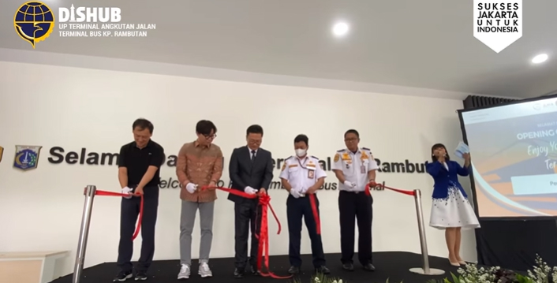

Media Report from NIA
Media Report
Opening Ceremony proyek penyusunan master plan dan operasi percontohan modernisasi terminal bus di Indonesia
DATE : 2023-09-13 Sehubungan dengan kerjasama antara Kementrian Perhubungan Republik Indonesia, Kementrian Pertanahan, Infrastruktur dan Transportasi Republik Korea (MOLIT) dan Samchully Networks
Hari ini Rabu, 13 September 2023 diselenggarakan acara Opening Ceremony proyek penyusunan master plan dan operasi percontohan modernisasi terminal bus di Indonesia dihadiri langsung oleh Bapak Kepala Satuan Operasional UP. Terminal Angkutan Jalan, CEO Samchully Network, Vice President Samchully Network, General Manager Samchully Network dan CEO JFG Interior. Dalam acara ini juga turut mengundang para Pengurus PO dan Bus Mania Comunity.